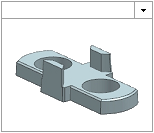
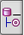
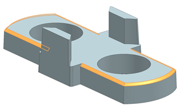
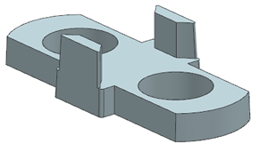

删除倒斜角
-
点击资源条上的历史记录
 选项卡，并打开上一个练习中保存的电池垫片副本，或者打开 des07_battery_spacer_02。
选项卡，并打开上一个练习中保存的电池垫片副本，或者打开 des07_battery_spacer_02。
如果打开的是提供的部件，选择文件→另存为以保存一个副本，将 des07替换为您的名字首字母缩写。
由于您保存该部件时处于建模应用模块，因此 NX 将在建模应用模块中打开该部件。
-
点击资源条上的部件导航器  选项卡。
-
为了保持部件导航器打开，点击左上角的图钉 。
-
在部件导航器中，点击倒斜角 (7)。
NX 将在图形窗口中高亮显示倒斜角特征。

-
在部件导航器中，右击倒斜角 (7)并选择删除 。
